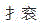

A.补气活血，镇惊安神
B.滋阴降火，养心安神
C.益气镇惊，安神定志
D.补益心脾，养血安神
E.以上均不是
参考答案：D
A.行气化痰
B.利湿清热
C.益气养血
D.疏通气机
E.消食行气
A.胃脘胀痛，连及胁肋
B.痛处游移不定
C.嗳腐吞酸
D.食后胀甚，按之稍舒
E.脉弦
参考答案：C
A.温阳通便
B.补气润肠
C.养血润燥
D.清热润肠
E.顺气导滞
A.运脾化湿
B.辛散解表
C.扶肝抑脾
D.疏肝理气
E.温经通络
A.清热燥湿
B.解表化湿
D.运脾化湿
E.温补肾阳
A.至宝丹或安宫牛黄丸
B.苏合香丸
C.解语丹
D.参附汤
E.独参汤
参考答案：A
A.实脾饮
B.真武汤
C.苓桂术甘汤
D.四君子汤
E.五苓散
参考答案：B
A.补益肾气，调理冲任
B.滋肾益阴，养血调经
C.养阴清热，凉血调经
D.健脾益气，养血调经
E.补血养血，活血调经
A.妊娠早期
B.恶心呕吐不食
C.呕吐酸水或苦水
D.神疲思睡
E.舌淡，苔白润，脉缓滑无力
A.益气药
B.辛温解表药
C.攻里药
D.清热解毒药
E.宣肺解表药
A.恶寒发热
B.骨蒸潮热，五心烦热
C.生气后发热
D.劳累后发热
E.面部烘热
A.调理脏腑
B.化痰止咳
C.燥湿化痰
D.疏散解表
E.祛邪利肺
参考答案：E
A.宣肺散寒
B.健脾益气
C.宣肺泄热
D.补益肺气
E.补肾纳气
A.尿中带血
B.小便时疼痛与否
C.发病脏腑
D.脉象
E.舌苔
A.镇惊定志，养心安神
C.温补心阳，安神定惊
D.活血祛瘀安神
E.益气补血，养心安神
A.四君子汤
B.四物汤
C.归脾汤
D.六味地黄丸
E.生脉散合人参养荣汤
A.补益心脾
B.滋阴降火
C.清肝泻火
D.益气镇惊
E.活血化瘀
A.肝气郁结
B.气郁化火
C.瘀血阻络
D.忧郁伤神
E.痰气郁结
A.柴胡疏肝散
B.益胃汤
C.黄芪建中汤
D.保和丸
E.失笑散
A.气虚
B.血虚
C.阴虚
D.热秘
E.实秘
A.肾、膀胱
B.肝、胆
C.脾、胃
D.心、小肠
E.肺、大肠
A.肾阳虚衰
B.脾胃虚弱
C.肝脾不和
D.脾肾阳虚
E.心肾不交
A.参苓白术散
B.人参养荣汤
C.加减苁蓉菟丝子丸
D.丹溪治湿痰方
E.逍遥散
A.妊娠初期口淡，呕吐清涎
B.胸满肋痛
C.嗳气叹息
D.头胀而晕，烦渴口苦
E.舌淡红，苔微黄，脉弦滑
A.风热感冒
B.风热夹燥感冒
C.风热夹暑湿感冒
D.风寒感冒
E.时行感冒
A.气血阴阳失调
B.气血阴精亏虚，脏腑功能失调
C.气血阴阳亏虚，脏腑功能失调
D.阴阳营卫不和
E.脏腑功能失调
A.风热犯肺
B.燥热伤肺
C.风寒袭肺
D.痰湿犯肺
E.痰热郁肺
A.病情缓急
B.呼吸节律
C.治疗脏腑
E.呼吸频率
A.尿血
B.咯血
C.吐血
D.便血
E.衄血
A.面色无华
B.善惊易恐
C.心烦少寐
D.形寒肢冷
E.心痛阵作
A.心血瘀阻
B.痰浊闭阻
C.寒凝心脉
D.心肾阴虚
E.阳气虚衰
A.心脾两虚
B.阴虚火旺
C.痰热扰心
D.心虚胆怯
E.肝火扰心
A.精神抑郁
B.潮热盗汗
C.胁肋胀痛
D.易怒善哭
E.咽中如物梗阻
A.麻子仁丸
B.增液承气汤
C.五仁丸
D.润肠丸
E.增液汤
A.清肝
B.疏肝
C.养肝
D.温肾
E.活血通络
A.分利
B.消导
C.清化
D.固涩
E.疏解
A.燥热犯肺
B.肝火犯肺
C.阴虚火旺
D.胃热壅盛
E.脾胃虚弱
A.带下色白，质稀薄，无臭气，绵绵不断
B.面色萎黄，体倦乏力
C.精神疲倦，纳少便溏
D.五心烦热，失眠多梦
E.舌淡，苔白腻，脉缓弱
A.实热
B.虚热
C.郁热
D.瘀热
E.湿热
A.带下量多，色黄，质黏腻，有臭气
B.或带下色白质黏如豆腐渣样，阴痒
C.口苦咽干，小便短黄
D.面部烘热，五心烦热，失眠多梦
E.舌苔黄腻，脉濡数
A.八珍汤
B.养心汤
C.逍遥散
D.四物汤
E.补中益气汤
A.健脾益气，固涩止带
B.健脾益气，清热止带
C.健脾益气，升清降浊
D.健脾益气，清热利湿
E.健脾益气，除湿止带
A.经期延后，量少，色黯红有块，小腹冷痛拒按，得热痛减
B.经期延后，量少，色淡红，质清稀，无血块，小腹隐痛，喜温喜按
C.经期延后，量少，色淡红，少腹空痛，心悸眼花
D.经期延后，量少，色淡黯，质清稀，腰酸腿软，头晕耳鸣
E.经期延后，量少，色黯红，或有血块，小腹胀痛，精神抑郁
A.人参、白术、怀山药
B.柴胡、白芍、陈皮
C.苍术、黑芥穗
D.车前子、甘草
E.薏苡仁、茯苓
A.寒滞冲任型月经后期
B.阳虚寒凝型月经后期
C.肾精亏虚型月经后期
D.肝郁气滞型月经后期
E.痰湿阻滞型月经后期
A.带下过少，甚至全无
B.烘热汗出，烦热胸闷
C.头晕耳鸣，腰膝酸软
D.小便黄，大便干结
A.归脾汤
B.固阴煎
D.大补元煎
E.定经汤
A.四物汤
B.桃红四物汤
C.小营煎加减
D.血府逐瘀汤
E.人参养荣汤
A.逍遥散
C.大补元煎
D.当归地黄饮
E.调肝汤
A.仰卧位
B.侧卧位
C.俯卧位
D.仰靠坐位
E.俯伏坐位
A.滞针
B.后遗感
C.弯针
D.晕针
E.气胸
A.法
B.揉法
C.擦法
D.推法
E.抹法
A.拍法
B.击法
C.摇法
D.抖法
E.踩跷法
A.立即起针
B.卧床时头部抬高
C.饮适量温水或热茶
D.针刺人中穴
E.必要时配合其他急救措施
A.推法
B.捏法
C.抖法
D.摇法
E.拿法
A.眼
B.神门
C.耳尖
D.胃
E.降压沟
A.对耳轮下脚外二分之一处
B.对耳轮下脚内二分之一处
C.对耳轮下脚与耳轮内侧交界处
D.对耳轮下脚的内上角
E.对耳轮上脚的外上角
A.表里配穴法
B.远近配穴法
C.上下配穴法
D.左右配穴法
E.前后配穴法
A.小肠
B.胃
C.胆
D.大肠
E.鼻
A.风邪
B.寒邪
C.暑邪
D.湿邪
E.火邪
A.主水
B.藏精
C.纳气
D.主生长、发育和生殖
E.机体物质代谢和生理功能的原动力
A.心
B.脾
C.肺
D.肾
E.肝
E.膀胱
A.汗液
B.泪液
C.涎液
D.唾液
E.涕液
A.为阳邪
B.炎热
C.伤津
D.动血
E.生风
A.胃
B.膀胱
C.小肠
D.胆
E.爪
A.调畅气机
B.通调水道
C.助脾运化
D.调节生殖功能
E.贮藏血液
A.肾精不足
B.肾气不足
C.肾阳不足
D.肾阴不足
E.脾气不足
A.膀胱
B.胆
C.胃
D.小肠
E.耳
A.病情重，预后差
B.高热持续不退
C.易伤津耗气
D.扰动心神
E.传染性强
A.唾
B.涎
C.涕
D.泪
E.痰
A.气候反常
B.环境因素
C.预防措施不当
D.社会因素
E.精神因素
A.血的生成
B.气机调节
C.气的生成
D.血的统摄
E.气的宣发
A.心、肝、脾
B.心、肺、脾
C.心、肝、肾
D.心、肺、肝
E.肺、脾、肾
A.寒证
B.脾虚证
C.痛证
D.血瘀
E.惊风
A.卫气
B.营气
C.原气
D.宗气
E.精气
A.肝
B.心
C.脾
D.肺
E.肾
A.气虚证
B.血虚证
C.寒证
D.阴虚证
E.阳虚证
A.营
B.精
C.气
D.血
E.津液
A.过喜
B.过思
C.过怒
D.过恐
E.过悲
A.舌苔的有无
B.舌苔的润燥
C.舌苔的厚薄
D.舌苔的颜色
E.舌苔的腐腻
A.过度愤怒
B.喜乐过度
C.过度悲忧
D.突然受惊
E.思虑过度
A.痰饮
B.湿热
C.瘀血
D.阴虚
E.虚寒
A.呼吸功能
B.藏血功能
C.疏泄功能
D.经气功能
E.运化功能
A.红舌
B.紫舌
C.绛舌
D.淡红舌
E.青紫舌
A.气消
B.气结
C.气上
D.气下
E.气乱
A.浮脉
B.洪脉
C.沉脉
D.涩脉
E.虚脉
B.热证
C.痰饮
D.湿证
E.脾虚证
A.心火上炎
B.肝火上炎
C.肾阴不足
D.肾阴涸竭
E.胃火上炎
A.神无所归，虑无所定
B.心悸、失眠、健忘、多梦
C.面红目赤
D.精神不集中，甚则失神狂乱
E.意志消沉，面色惨淡
微信关注